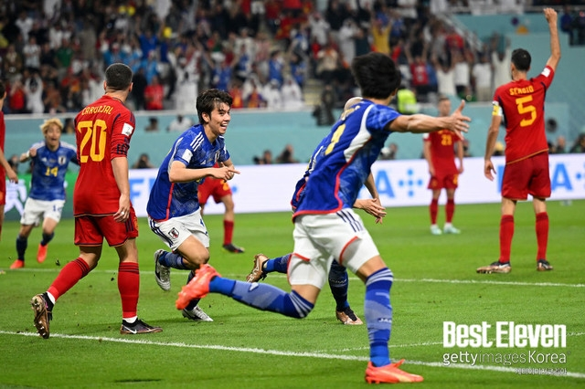
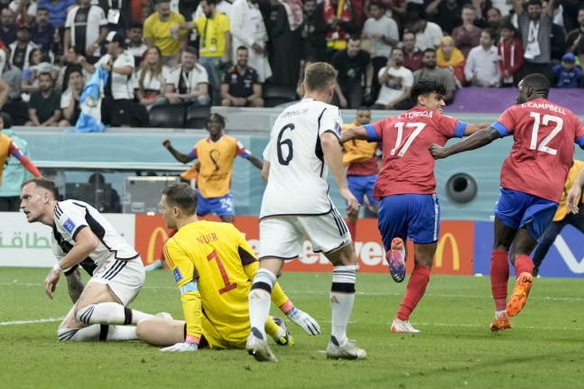

[월드컵] 이변 꿈꾸는 벤투호, '부상 악재' 포르투갈 측면 빈틈 노려라

(도하=연합뉴스) 장보인 기자 = 벤투호의 2022 카타르 월드컵 조별리그 마지막 상대인 '강호' 포르투갈에도 빈틈은 있다. 수비수들의 부상으로 생긴 공백이 태극전사들에겐 돌파구가 될 수 있다. 파울루 벤투 감독이 이끄는 한국 축구 대표팀은 한국시간으로 3일 0시 카타르 알라이얀의 에듀케이션 시티 스타디움에서 포르투갈과 카타르 월드컵 조별리그 H조 최종 3차전을 치른다. 포르투갈의 국제축구연맹(FIFA) 랭킹은 9위로, H조 4개 팀 중 가장 높다. 한국은 28위다. 조별리그에서도 포르투갈은 가나(61위)를 3-2, 우루과이(14위)를 2-0으로 제압하며 2연승으로 3차전 결과와 상관없이 16강 진출을 확정했다. 우루과이와 0-0으로 비긴 데 이어 가나에 2-3으로 덜미를 잡힌 한국은 마지막 3차전에서 가장 강력한 상대인 포르투갈을 넘어야 16강의 희망을 이어갈 수 있다. 포르투갈을 꺾고 승점 3을 챙긴 뒤에 같은 조 가나(1승 1패)-우루과이(1무 1패)전의 결과를 지켜봐야 한다.
[스포츠조선 윤진만 기자]'알코르의 기적'은 없었다. '전차군단' 독일 축구대표팀이 월드컵 두 대회 연속 조별리그 '광탈'(광속 탈락)의 오명을 썼다. 독일은 2일(한국시각) 카타르 알코르 알바이트 스타디움에서 열린 코스타리카와의 2022년 카타르월드컵 조별리그 E조 최종전에서 4대2로 승리했다. 일본전 충격패(1대2), 스페인전 무승부(1대1)를 기록하며 승리가 없었던 독일은 대회 3경기만에 첫 승을 신고했다. 승점 4점을 기록한 독일은 애초 자력 16강행이 불가능했다. 같은시각에 열린 스페인-일본전에서 조 선두 스페인이 승리해 조 2위를 노려야 했다. 하지만 일본이 놀랍게도 2대1로 승리하면서 E조 최종 순위는 일본(6점)-스페인(4점)-독일(4점)-코스타리카(3점) 순이 됐다. 독일은 기어이 스페인과 승점 동률을 만들었지만, 득실차에서 밀렸다. 스페인이 +6골, 독일이 '+1골'이다. 이로써 독일은 지난 2018년 러시아월드컵에 이어 두 대회 연속 조별리그 탈락이라는 충격적인 결과를 맞이했다. 반드시 승리가 필요했던 독일은 토마스 뮐러, 세르주 나브리, 르로이 사네, 레온 고레츠카, 자말 무시알라 등 바이에른 뮌헨 소속 선수를 중심으로 공격진을 꾸렸다.
일본이 기어코 16강에 도달했다. 어려운 상황이었지만, '무적함대'를 상대로 역전승을 거두는 기염을 토했다. 2일(이하 한국 시각) 오전 4시, 카타르 도하에 위치한 칼리파 인터내셔널 스타디움에서 2022 FIFA(국제축구연맹) 카타르 월드컵 E조 3라운드 일본-스페인전이 킥오프했다. 경기 결과는 2-1, 일본의 역전승이었다. 일본은 전반 11분 알바로 모라타에게 선제골을 내줬으나, 후반 3분 도안 리츠, 후반 6분 다나카 아오의 연속골로 경기를 뒤집었다. 이로써 일본은 1위로 16강에 간다. 경기 초반, 두 팀은 강하게 부닥쳤다. 점유율은 예상대로 스페인이 쥐고 있으나, 철저하게 카운터어택으로 무장한 일본도 스페인 골문 근처로 몇 차례 접근했다. 일본은 백 파이브에 가까운 형태로 둘러서 스페인의 공격을 원천 봉쇄하려는 전략을 세운 듯했다. 전반 12분, 스페인이 선제골을 터뜨렸다. 주인공은 알바로 모라타였다. 일본의 약점인 제공권을 알바로 모라타가 제대로 공략했다. 우 측면에서 세사르 아스필리쿠에타가 정교한 크로스를 올렸고, 알바로 모라타는 이타쿠라 쿄와 이토 준야 사이에서 점프하며 헤더로 골을 넣었다. 전반 23분, 또다시 스페인이 기회를 잡았다. 가비에서 시작한 패스가 알바로 모라타에게 떨어졌고, 이내 슛이 나왔다. 공은 일본 골키퍼 곤다 슈이치가 잡아냈다. 일본은 실점 이후부터 극심한 수세였다. 다니 올모의 슛은 이타쿠라 쿄가 몸을 던져 막아냈다. 전반 36분, 일본의 기나긴 빌드업 끝에 카마다 다이치가 슛 기회를 잡았다. 동료가 버텨주는 사이 볼을 달고 들어간 카마다 다이치는 스페인 디펜더 몸에 맞는 슛을 기록했다. 그러나 이렇게 일본의 공격이 한 번 끝나면, 스페인이 오래도록 볼을 쥐고 게임을 굴렸다. 일본으로서는 물리적으로 공격 기회가 적을 수밖에 없었다. 이렇게 전반전은 마무리됐다. 일본은 전반전 막판 옐로카드 몇 장을 추가하는 악재도 떠안았다. 그래도 후반전 거센 반격을 해야 했다. 이대로라면 탈락이기 때문이다. 일본은 예상대로 후반 시작과 함께 도안 리츠 및 미토마 카오루를 투입했다. 독일전 반전의 선봉장들이었다.
"실력에는 의심의 여지가 없다. 지속적으로 관찰했고, 많이 발전한 선수다." 벤투 감독이 가나와 2차전에서 맹활약한 이강인에 대한 찬사를 아끼지 않았다. 이강인은 3차전에서 벤투 감독의 '깜짝 카드'가 될 수 있을까? 파울루 벤투 감독이 이끄는 대한민국 월드컵 대표팀은 12월 3일 오전 0시(한국시간) 카타르 알 라이얀에 위치한 에듀케이션 시티 스타디움에서 열리는 2022 국제축구연맹(FIFA) 카타르 월드컵 조별리그 H조 3차전에서 포르투갈을 상대한다. 한국은 승점 1점으로 3위에 머물고 있기 때문에 16강 진출을 위해서는 포르투갈을 반드시 잡아야 한다. 더 이상 물러설 곳이 없는 벤투호다.